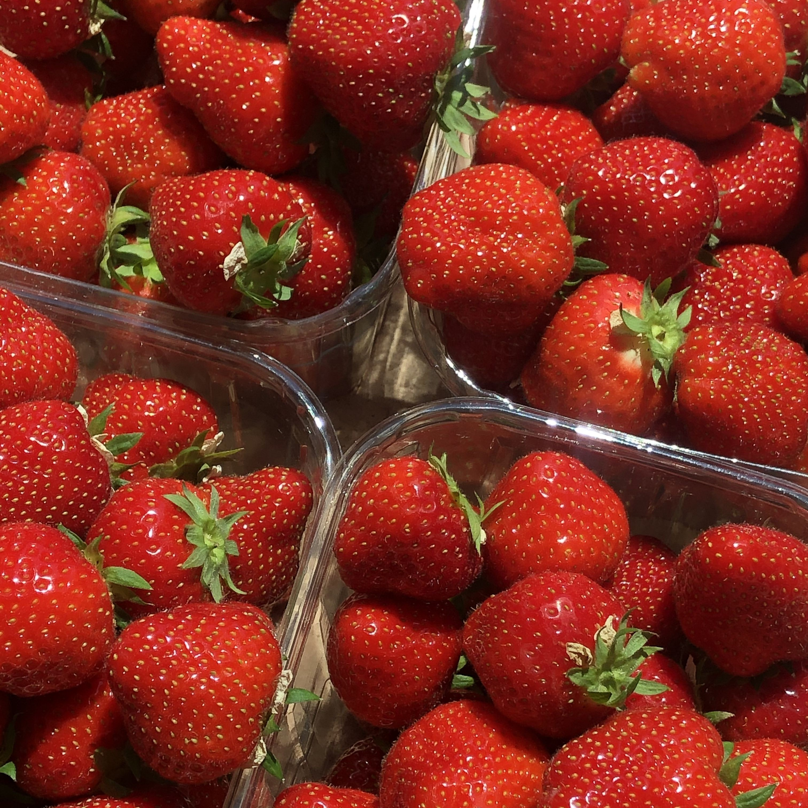
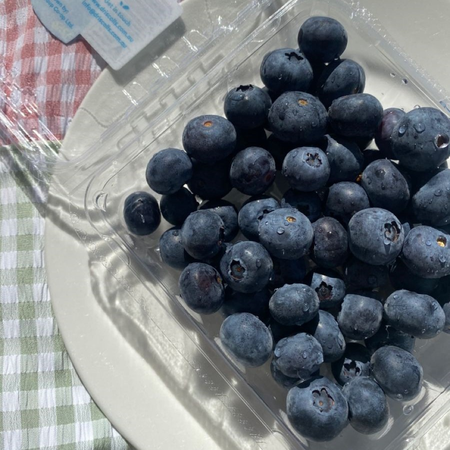
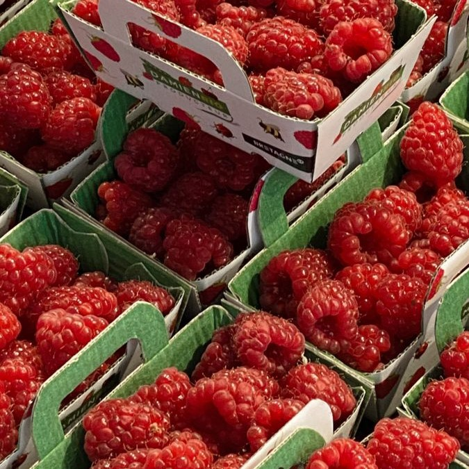

|  |  |  |
StrawberryThe first garden strawberry was grown in Brittany, France, during the late 18th century. Prior to this, wild strawberries and cultivated selections from wild strawberry species were the common source of the fruit. Strawberry cultivars vary widely in size, color, flavor, shape, degree of fertility. Plump, juicy and bright red, strawberries are a natural and tasty treat enjoyed any time of year, but these sweet berries are at their peak during the early summer months. Packed with vitamins, fiber, and particularly high levels of antioxidants known as polyphenols, strawberries are a sodium-free, fat-free, cholesterol-free, low-calorie food. Strawberries are high in fibre, which is important for moving food through your digestive system and helping bowel movements. Strawberries can be grown indoors in strawberry pots.Strawberries won't grow indoors in winter unless aided by a combination of blue and red LED lights. |
BlueberryBlueberries are a widely distributed and widespread group of perennial flowering plants with blue or purple berries. The genus Vaccinium has a mostly circumpolar distribution, with species mainly present in North America, Europe, and Asia. Five species of blueberries grow wild in Canada, including Vaccinium myrtilloides, Vaccinium angustifolium and Vaccinium corymbosum, which grow on forest floors or near swamps. Blueberries contain a plant compound called anthocyanin. This gives blueberries both their blue color and many of their health benefits. Blueberries can help heart health, bone strength, skin health, blood pressure, diabetes management, cancer prevention, and mental health. Blueberries are also low in sodium and have virtually no fat. |
RaspberryThe raspberry is the edible fruit of a multitude of plant species in the genus Rubus of the rose family, most of which are in the subgenus Idaeobatus. The name also applies to these plants themselves. Raspberries are perennial with woody stems. They provide potassium, essential to heart function, and proven to lower blood pressure. The omega-3 fatty acids in raspberries can help prevent stroke and heart disease. They also contain a mineral called manganese, which is necessary for healthy bones and skin and helps regulate blood sugar. The chemical substances naturally found in raspberries may also aid weight loss. Raspberries are a much richer source of the vitamin. Vitamin C helps your brain produce neurotransmitters. |